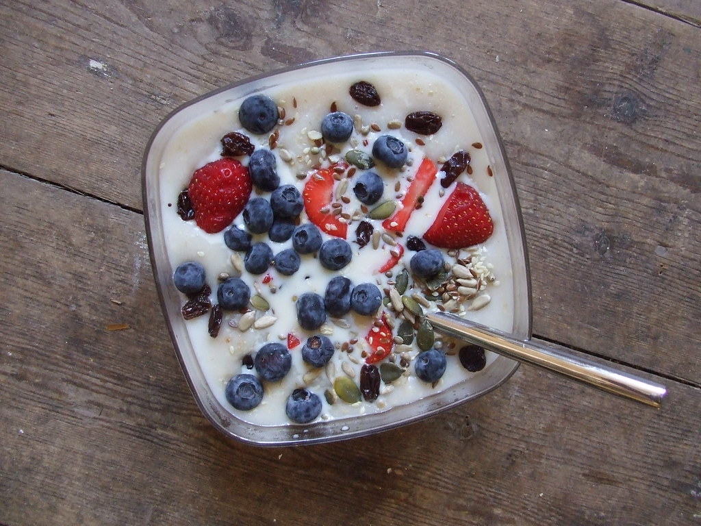
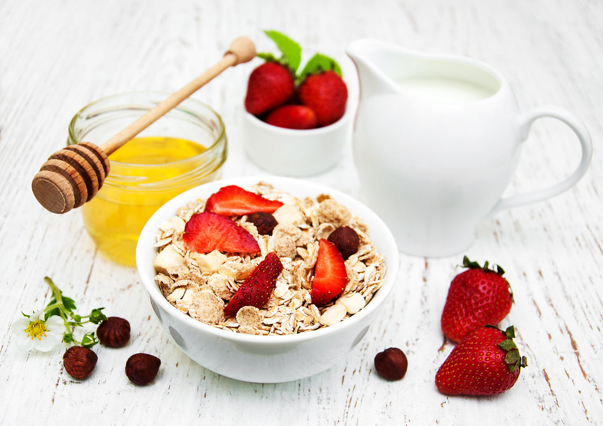
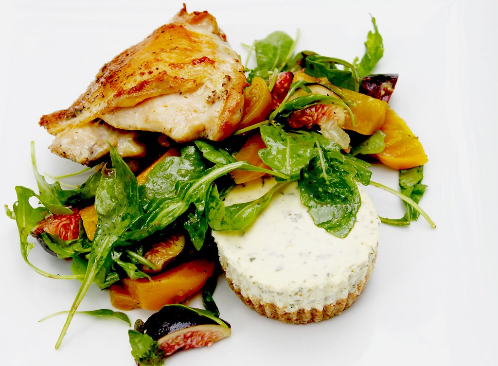
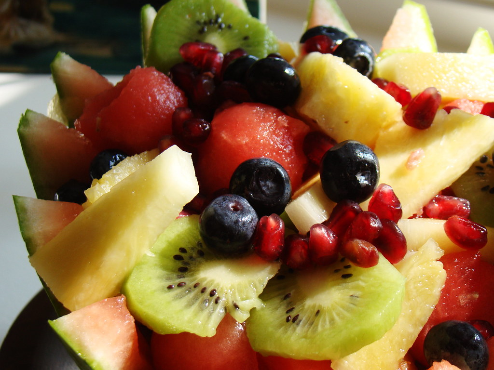

Cinnamon Overnight Oats
A make-ahead breakfast that does the work while you sleep, ready to spoon straight from the fridge.

Greek Yogurt and Berry Bowl
A quick, cooling bowl that layers thick yogurt, fresh berries and a little crunch.
Lentil and Vegetable Soup
A big, hearty pot of soup built on lentils and a tumble of everyday vegetables.

Bitter Melon and Egg Stir-fry
A fast, savoury stir-fry where soft scrambled eggs mellow the distinctive bite of bitter melon.

Spiced Mulberry-Leaf Infusion
A gentle, fragrant herbal tea steeped with mulberry leaf and warming spice.

Sheet-pan Salmon with Greens
Salmon, broccoli and green beans roasted together on one tray for a fuss-free dinner.
Chickpea and Herb Salad
A bright, herb-flecked salad of chickpeas, crisp vegetables and a lemony dressing.
Garden Vegetable Omelette
A soft, golden omelette folded around a handful of sauteed garden vegetables.
Roasted Spiced Apple
A warm, fragrant baked apple spiced with cinnamon and topped with crunchy oats and nuts.

Leafy Green Smoothie
A fresh, easy-drinking blend of leafy greens, fruit and creamy yogurt.